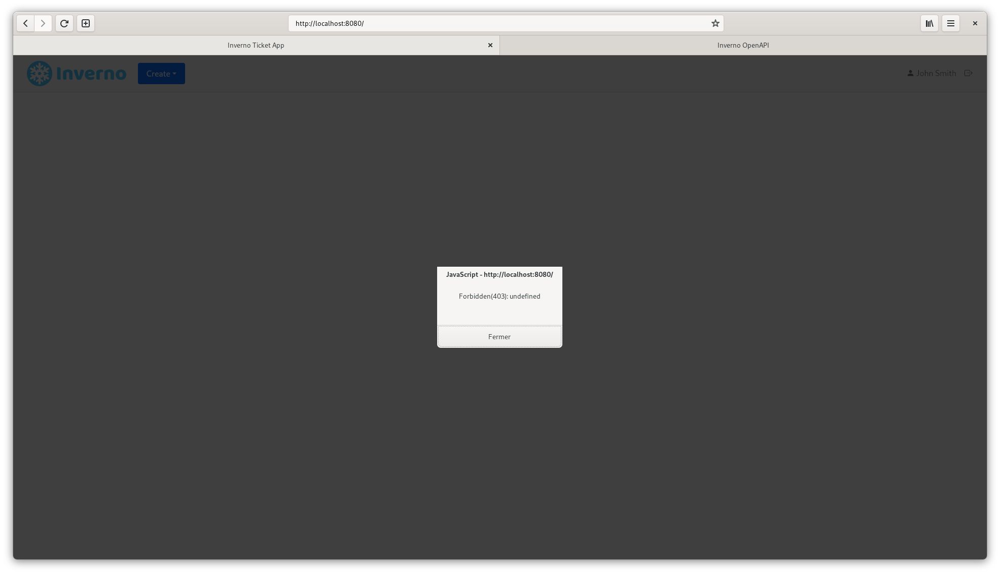

Inverno Framework Role-based Access Control Guide
Author: Jeremy Kuhn
What you'll learn
This guide shows how to resolve a Role-based access controller and use it to control access to services or resources in an Inverno Web application.
What you'll need
- A Java™ Development Kit (OpenJDK) at least version 21.
- Apache Maven at least version 3.9.
- An Integrated Development Environment (IDE) such as Eclipse or IDEA although any text editor will do.
- An Inverno Web application to protect, such as the Inverno Ticket application properly secured following the Inverno Framework Web Application Security Guide.
- A basic understanding of role-based access control.
This guide directly follows the Inverno Framework Web Application Security Guide. In this guide you will continue protecting the Inverno Ticket application using role-based access control to provide finer access control to services and resources.
The objective is to be able to control the access to particular services or resources based on the roles that have been assigned to users.
The complete Inverno Ticket application can be found in GitHub.
Step 1: Resolve a Role-based access controller
In order to control whether a user authenticated in the ticket application has access to a particular service or resource, an AccessController must be present in the SecurityContext. Following the Inverno security model, an entity accessing an application can be authenticated, maybe identified, and it may be possible to control its access based on more complex approaches such as role-based or permissions-based access control. It might then not always be possible to get an access controller, this greatly depends on the authentication process and the application design.
The Inverno Ticket application uses an authentication process based on login credentials (username/password) using a RedisUserRepository to resolve and match the credentials provided by the user against registered users. This allows to define users and assign them into groups which can easily be used to define their roles.
So the first thing to do is to resolve a RoleBasedAccessController from the UserAuthentication resulting from the authentication. This must be done in the SecurityConfigurer, the SecurityContext and the InterceptingSecurityContext declared respectively in WebRouter.Configurer and WebRouteInterceptor.Configurer should now be defined with a RoleBasedAcccessController and a GroupsRoleBasedAccessControllerResolver should be used in the SecurityInterceptor to resolve the access controller from the user's groups exposed in the UserAuthentication.
package io.inverno.guide.ticket.internal.security;
import io.inverno.core.annotation.Bean;
import io.inverno.mod.base.reflect.Types;
import io.inverno.mod.base.resource.MediaTypes;
import io.inverno.mod.http.base.ExchangeContext;
import io.inverno.mod.http.base.Method;
import io.inverno.mod.http.base.UnauthorizedException;
import io.inverno.mod.security.accesscontrol.GroupsRoleBasedAccessControllerResolver;
import io.inverno.mod.security.accesscontrol.RoleBasedAccessController;
import io.inverno.mod.security.authentication.LoginCredentialsMatcher;
import io.inverno.mod.security.authentication.user.User;
import io.inverno.mod.security.authentication.user.UserAuthentication;
import io.inverno.mod.security.authentication.user.UserAuthenticator;
import io.inverno.mod.security.authentication.user.UserRepository;
import io.inverno.mod.security.http.AccessControlInterceptor;
import io.inverno.mod.security.http.SecurityInterceptor;
import io.inverno.mod.security.http.context.InterceptingSecurityContext;
import io.inverno.mod.security.http.context.SecurityContext;
import io.inverno.mod.security.http.form.FormAuthenticationErrorInterceptor;
import io.inverno.mod.security.http.form.FormCredentialsExtractor;
import io.inverno.mod.security.http.form.FormLoginPageHandler;
import io.inverno.mod.security.http.form.RedirectLoginFailureHandler;
import io.inverno.mod.security.http.form.RedirectLoginSuccessHandler;
import io.inverno.mod.security.http.form.RedirectLogoutSuccessHandler;
import io.inverno.mod.security.http.login.LoginActionHandler;
import io.inverno.mod.security.http.login.LoginSuccessHandler;
import io.inverno.mod.security.http.login.LogoutActionHandler;
import io.inverno.mod.security.http.login.LogoutSuccessHandler;
import io.inverno.mod.security.http.token.CookieTokenCredentialsExtractor;
import io.inverno.mod.security.http.token.CookieTokenLoginSuccessHandler;
import io.inverno.mod.security.http.token.CookieTokenLogoutSuccessHandler;
import io.inverno.mod.security.identity.PersonIdentity;
import io.inverno.mod.security.identity.UserIdentityResolver;
import io.inverno.mod.security.jose.jwa.OCTAlgorithm;
import io.inverno.mod.security.jose.jws.JWSAuthentication;
import io.inverno.mod.security.jose.jws.JWSAuthenticator;
import io.inverno.mod.security.jose.jws.JWSService;
import io.inverno.mod.web.server.ErrorWebRouteInterceptor;
import io.inverno.mod.web.server.WebRouteInterceptor;
import io.inverno.mod.web.server.WebRouter;
import io.inverno.mod.web.server.annotation.WebRoute;
import io.inverno.mod.web.server.annotation.WebRoutes;
import java.util.List;
import reactor.core.publisher.Mono;
@Bean( visibility = Bean.Visibility.PRIVATE )
@WebRoutes({
@WebRoute(path = { "/login" }, method = { Method.GET }),
@WebRoute(path = { "/login" }, method = { Method.POST }),
@WebRoute(path = { "/logout" }, method = { Method.GET }, produces = { "application/json" })
})
public class SecurityConfigurer implements WebRouteInterceptor.Configurer<InterceptingSecurityContext<PersonIdentity, RoleBasedAccessController>>, WebRouter.Configurer<SecurityContext<PersonIdentity, RoleBasedAccessController>>, ErrorWebRouteInterceptor.Configurer<ExchangeContext> {
...
@Override
public WebRouteInterceptor<InterceptingSecurityContext<PersonIdentity, RoleBasedAccessController>> configure(WebRouteInterceptor<InterceptingSecurityContext<PersonIdentity, RoleBasedAccessController>> interceptors) {
return interceptors
.intercept()
.path("/")
.path("/api/**")
.path("/static/**")
.path("/webjars/**")
.path("/open-api/**")
.path("/logout")
.interceptors(List.of(
SecurityInterceptor.of(
new CookieTokenCredentialsExtractor(),
new JWSAuthenticator<UserAuthentication<PersonIdentity>>(
this.jwsService,
Types.type(UserAuthentication.class).type(PersonIdentity.class).and().build()
)
.failOnDenied()
.map(jwsAuthentication -> jwsAuthentication.getJws().getPayload()),
new UserIdentityResolver<>(),
new GroupsRoleBasedAccessControllerResolver()
),
AccessControlInterceptor.authenticated()
));
}
@Override
public void configure(WebRouter<SecurityContext<PersonIdentity, RoleBasedAccessController>> routes) {
...
}
@Override
public ErrorWebRouteInterceptor<ExchangeContext> configure(ErrorWebRouteInterceptor<ExchangeContext> errorInterceptors) {
...
}
}
Note that it is important to define
RoleBasedAccessControllerin bothWebRoutesConfigurerandWebInterceptorsConfigurer. Since theInterceptingSecurityContextalso extends theSecurityContext, they cannot be defined with different bounds and the compilation will fail with inconsistent context types errors when this happens. It is also interesting to notice that it is not required to change this in theSecurityControllersince bounds could have been declared using upper wildcards (i.e.SecurityContext<? extends PersonIdentity, ? extends AccessController>) which is perfectly fine. Please consult the reference documentation to better understand how the exchange context is generated when defining multiple Web configurers and Web controllers.
A RoleBasedAccessController should now be present in the SecurityContext and accessible to subsequent interceptors and route handlers.
Step 2: Control access to services and resources
From there, you have two ways to control access to protected services and resources: you can do it globally in the SecurityConfigurer using a specific AccessControlInterceptor on specific routes, or you can directly use the RoleBasedAccessController in route handlers. These basically cover two different use cases: the first approach allows to control access in a non-intrusive way by configuration whereas the other one allows to provide different behaviours based on the user roles, access control takes then an active part in the functionality.
Let's start by limiting the access to the /open-api/** routes to developer users. You can do this globally in the SecurityConfigurer by defining an access control interceptor:
package io.inverno.guide.ticket.internal.security;
import io.inverno.core.annotation.Bean;
import io.inverno.mod.base.reflect.Types;
import io.inverno.mod.base.resource.MediaTypes;
import io.inverno.mod.http.base.ExchangeContext;
import io.inverno.mod.http.base.ForbiddenException;
import io.inverno.mod.http.base.Method;
import io.inverno.mod.http.base.UnauthorizedException;
import io.inverno.mod.security.accesscontrol.GroupsRoleBasedAccessControllerResolver;
import io.inverno.mod.security.accesscontrol.RoleBasedAccessController;
import io.inverno.mod.security.authentication.LoginCredentialsMatcher;
import io.inverno.mod.security.authentication.user.User;
import io.inverno.mod.security.authentication.user.UserAuthentication;
import io.inverno.mod.security.authentication.user.UserAuthenticator;
import io.inverno.mod.security.authentication.user.UserRepository;
import io.inverno.mod.security.http.AccessControlInterceptor;
import io.inverno.mod.security.http.SecurityInterceptor;
import io.inverno.mod.security.http.context.InterceptingSecurityContext;
import io.inverno.mod.security.http.context.SecurityContext;
import io.inverno.mod.security.http.form.FormAuthenticationErrorInterceptor;
import io.inverno.mod.security.http.form.FormCredentialsExtractor;
import io.inverno.mod.security.http.form.FormLoginPageHandler;
import io.inverno.mod.security.http.form.RedirectLoginFailureHandler;
import io.inverno.mod.security.http.form.RedirectLoginSuccessHandler;
import io.inverno.mod.security.http.form.RedirectLogoutSuccessHandler;
import io.inverno.mod.security.http.login.LoginActionHandler;
import io.inverno.mod.security.http.login.LoginSuccessHandler;
import io.inverno.mod.security.http.login.LogoutActionHandler;
import io.inverno.mod.security.http.login.LogoutSuccessHandler;
import io.inverno.mod.security.http.token.CookieTokenCredentialsExtractor;
import io.inverno.mod.security.http.token.CookieTokenLoginSuccessHandler;
import io.inverno.mod.security.http.token.CookieTokenLogoutSuccessHandler;
import io.inverno.mod.security.identity.PersonIdentity;
import io.inverno.mod.security.identity.UserIdentityResolver;
import io.inverno.mod.security.jose.jwa.OCTAlgorithm;
import io.inverno.mod.security.jose.jws.JWSAuthentication;
import io.inverno.mod.security.jose.jws.JWSAuthenticator;
import io.inverno.mod.security.jose.jws.JWSService;
import io.inverno.mod.web.server.ErrorWebRouteInterceptor;
import io.inverno.mod.web.server.WebRouteInterceptor;
import io.inverno.mod.web.server.WebRouter;
import io.inverno.mod.web.server.annotation.WebRoute;
import io.inverno.mod.web.server.annotation.WebRoutes;
import java.util.List;
import reactor.core.publisher.Mono;
@WebRoutes({
@WebRoute(path = { "/login" }, method = { Method.GET }),
@WebRoute(path = { "/login" }, method = { Method.POST }),
@WebRoute(path = { "/logout" }, method = { Method.GET }, produces = { "application/json" })
})
@Bean( visibility = Bean.Visibility.PRIVATE )
public class SecurityConfigurer implements WebRouteInterceptor.Configurer<InterceptingSecurityContext<PersonIdentity, RoleBasedAccessController>>, WebRouter.Configurer<SecurityContext<PersonIdentity, RoleBasedAccessController>>, ErrorWebRouteInterceptor.Configurer<ExchangeContext> {
...
@Override
public WebRouteInterceptor<InterceptingSecurityContext<PersonIdentity, RoleBasedAccessController>> configure(WebRouteInterceptor<InterceptingSecurityContext<PersonIdentity, RoleBasedAccessController>> interceptors) {
return interceptors
...
.intercept()
.path("/open-api/**")
.interceptor(AccessControlInterceptor.verify(securityContext -> securityContext.getAccessController()
.orElseThrow(() -> new ForbiddenException("Missing access controller"))
.hasRole("developer")
));
}
...
}
With above configuration, only authenticated users with role developer have access to open-api/** routes. Following Inverno security model, the RoleBasedAccessController exposed in the SecurityContext is an Optional and ForbiddenException is thrown if it is empty resulting in a forbidden (403) response.
You can now prevent non-admin users from creating, updating or deleting plans. Although this could be done as you have just seen, let's do it by injecting the SecurityContext in createPlan(), updatePlan() and deletePlan() methods in PlanWebController:
package io.inverno.guide.ticket.internal.rest.v1;
import io.inverno.core.annotation.Bean;
import io.inverno.guide.ticket.internal.model.Plan;
import io.inverno.guide.ticket.internal.model.Ticket;
import io.inverno.guide.ticket.internal.rest.DtoMapper;
import io.inverno.guide.ticket.internal.rest.v1.dto.PlanDto;
import io.inverno.guide.ticket.internal.service.PlanService;
import io.inverno.mod.base.resource.MediaTypes;
import io.inverno.mod.http.base.ForbiddenException;
import io.inverno.mod.http.base.Method;
import io.inverno.mod.http.base.NotFoundException;
import io.inverno.mod.http.base.Status;
import io.inverno.mod.http.base.header.Headers;
import io.inverno.mod.security.accesscontrol.RoleBasedAccessController;
import io.inverno.mod.security.http.context.SecurityContext;
import io.inverno.mod.security.identity.Identity;
import io.inverno.mod.web.base.annotation.Body;
import io.inverno.mod.web.base.annotation.FormParam;
import io.inverno.mod.web.base.annotation.PathParam;
import io.inverno.mod.web.base.annotation.QueryParam;
import io.inverno.mod.web.server.WebExchange;
import io.inverno.mod.web.server.annotation.WebController;
import io.inverno.mod.web.server.annotation.WebRoute;
import java.util.List;
import java.util.Optional;
import reactor.core.publisher.Flux;
import reactor.core.publisher.Mono;
@Bean( visibility = Bean.Visibility.PRIVATE )
@WebController( path = "/api/v1/plan" )
public class PlanWebController {
...
@WebRoute( method = Method.POST, consumes = MediaTypes.APPLICATION_JSON, produces = MediaTypes.APPLICATION_JSON )
public Mono<PlanDto> createPlan(@Body PlanDto plan, WebExchange<? extends SecurityContext<? extends Identity, ? extends RoleBasedAccessController>> exchange) {
return exchange.context().getAccessController()
.orElseThrow(() -> new ForbiddenException("Missing access controller"))
.hasRole("admin")
.flatMap(hasRole -> {
if(!hasRole) {
throw new ForbiddenException();
}
plan.setId(null);
return this.planDtoMapper.toDomain(plan)
.flatMap(this.planService::savePlan)
.doOnNext(savedPlan ->
exchange.response().headers(headers -> headers
.status(Status.CREATED)
.add(Headers.NAME_LOCATION, exchange.request().getPathBuilder().segment(savedPlan.getId().toString()).buildPath())
)
)
.flatMap(this.planDtoMapper::toDto);
});
}
@WebRoute( path = "/{planId}", method = Method.PUT, consumes = MediaTypes.APPLICATION_JSON, produces = MediaTypes.APPLICATION_JSON )
public Mono<PlanDto> updatePlan(@PathParam long planId, @Body PlanDto plan, SecurityContext<? extends Identity, ? extends RoleBasedAccessController> securityContext) {
return securityContext.getAccessController()
.orElseThrow(() -> new ForbiddenException("Missing access controller"))
.hasRole("admin")
.flatMap(hasRole -> {
if (!hasRole) {
throw new ForbiddenException();
}
plan.setId(planId);
return this.planDtoMapper.toDomain(plan)
.flatMap(this.planService::savePlan)
.flatMap(this.planDtoMapper::toDto)
.switchIfEmpty(Mono.error(NotFoundException::new));
});
}
@WebRoute( path = "/{planId}", method = Method.DELETE, produces = MediaTypes.APPLICATION_JSON )
public Mono<PlanDto> deletePlan(@PathParam long planId, SecurityContext<? extends Identity, ? extends RoleBasedAccessController> securityContext) {
return securityContext.getAccessController()
.orElseThrow(() -> new ForbiddenException("Missing access controller"))
.hasRole("admin")
.flatMap(hasRole -> {
if (!hasRole) {
throw new ForbiddenException();
}
return this.planService.removePlan(planId)
.flatMap(this.planDtoMapper::toDto)
.switchIfEmpty(Mono.error(NotFoundException::new));
});
}
...
}
Note how the
WebExchangecontext type was declared in thecreatePlan()method using a wildcard, this is actually required since the actual exchange context is not strictly aSecurityContext(it may implement other context types).
As you can see, it is quite easy to use the SecurityContext in pure applicative code and use it to access user's identity or control access. The expected Identity and AccessController types are also clearly specified in the Web configurers and the Web route handlers, defining a clear contract with the application. Inconsistent contexts can then easily be spotted during compilation and the application is required to provide the expected context types.
Step 3: Run the application
Before running the application, you should define users with roles admin or developer to test that access control is properly implemented. As described in the Inverno Framework Web Application Security Guide, you can modify TicketApp in order to create user admin in group admin and add user jsmith in the developer group:
package io.inverno.guide.ticket;
import io.inverno.core.annotation.Bean;
import io.inverno.core.v1.Application;
import io.inverno.mod.configuration.ConfigurationKey;
import io.inverno.mod.configuration.ConfigurationSource;
import io.inverno.mod.configuration.source.BootstrapConfigurationSource;
import io.inverno.mod.security.authentication.password.RawPassword;
import io.inverno.mod.security.authentication.user.User;
import io.inverno.mod.security.identity.PersonIdentity;
import java.io.IOException;
import java.util.List;
import java.util.function.Supplier;
import org.apache.logging.log4j.LogManager;
import org.apache.logging.log4j.Logger;
import reactor.core.publisher.Mono;
public class TicketApp {
private static final Logger LOGGER = LogManager.getLogger(TicketApp.class);
public static final String REDIS_KEY = "APP:Ticket";
public static final String PROFILE_PROPERTY_NAME = "profile";
@Bean(name = "configurationSource")
public interface TicketAppConfigurationSource extends Supplier<ConfigurationSource> {}
@Bean(name = "configurationParameters")
public interface TicketAppConfigurationParameters extends Supplier<List<ConfigurationKey.Parameter>> {}
public static void main(String[] args) throws IOException {
final BootstrapConfigurationSource bootstrapConfigurationSource = new BootstrapConfigurationSource(TicketApp.class.getModule(), args);
Ticket ticketApp = bootstrapConfigurationSource
.get(PROFILE_PROPERTY_NAME)
.execute()
.single()
.map(configurationQueryResult -> configurationQueryResult.asString("default"))
.map(profile -> {
LOGGER.info(() -> "Active profile: " + profile);
return Application.run(new Ticket.Builder()
.setConfigurationSource(bootstrapConfigurationSource)
.setConfigurationParameters(List.of(ConfigurationKey.Parameter.of(PROFILE_PROPERTY_NAME, profile)))
);
})
.block();
ticketApp.userRepository().getUser("jsmith")
.switchIfEmpty(Mono.defer(() -> ticketApp.userRepository().createUser(User.of("jsmith")
.password(new RawPassword("password"))
.identity(new PersonIdentity("jsmith", "John", "Smith", "jsmith@inverno.io"))
.groups("developer")
.build())
))
.flatMap(user -> {
if(!user.getGroups().contains("developer")) {
return ticketApp.userRepository().addUserToGroups("jsmith", "developer");
}
return Mono.just(user);
})
.block();
ticketApp.userRepository().getUser("admin")
.switchIfEmpty(Mono.defer(() -> ticketApp.userRepository().createUser(User.<PersonIdentity>of("admin")
.password(new RawPassword("password"))
.groups("admin")
.build())
))
.flatMap(user -> {
if(!user.getGroups().contains("admin")) {
return ticketApp.userRepository().addUserToGroups("admin", "admin");
}
return Mono.just(user);
})
.block();
}
}
Note that user admin was created with no identity which is perfectly acceptable and safe since the identity is exposed as an Optional in the SecurityContext.
You can now run the application:
$ docker run -d -p6379:6379 redis
$ mvn inverno:run
...
[INFO] --- inverno-maven-plugin:1.6.0:run (default-cli) @ inverno-ticket ---
[═══════════════════════════════════════════════ 100 % ══════════════════════════════════════════════] Running project io.inverno.guide.ticket@1.0.0-SNAPSHOT...
2024-12-19 11:29:06,139 INFO [main] i.i.g.t.TicketApp - Active profile: default
2024-12-19 11:29:06,224 INFO [main] i.i.c.v.Application - Inverno is starting...
╔════════════════════════════════════════════════════════════════════════════════════════════╗
║ , ~~ , ║
║ , ' /\ ' , ║
║ , __ \/ __ , _ ║
║ , \_\_\/\/_/_/ , | | ___ _ _ ___ __ ___ ___ ║
║ , _\_\/_/_ , | | / _ \\ \ / // _ \ / _|/ _ \ / _ \ ║
║ , __\_/\_\__ , | || | | |\ \/ /| __/| | | | | | |_| | ║
║ , /_/ /\/\ \_\ , |_||_| |_| \__/ \___||_| |_| |_|\___/ ║
║ , /\ , ║
║ , \/ , -- 1.6.0 -- ║
║ ' -- ' ║
╠════════════════════════════════════════════════════════════════════════════════════════════╣
║ Java runtime : OpenJDK Runtime Environment ║
║ Java version : 21.0.2+13-58 ║
║ Java home : /home/jkuhn/Devel/jdk/jdk-21.0.2 ║
║ ║
║ Application module : io.inverno.guide.ticket ║
║ Application version : 1.0.0-SNAPSHOT ║
║ Application class : io.inverno.guide.ticket.TicketApp ║
║ ║
║ Modules : ║
║ * ... ║
╚════════════════════════════════════════════════════════════════════════════════════════════╝
2024-12-19 11:29:06,234 INFO [main] i.i.g.t.Ticket - Starting Module io.inverno.guide.ticket...
2024-12-19 11:29:06,235 INFO [main] i.i.m.b.Boot - Starting Module io.inverno.mod.boot...
2024-12-19 11:29:06,546 INFO [main] i.i.m.b.Boot - Module io.inverno.mod.boot started in 311ms
2024-12-19 11:29:06,547 INFO [main] i.i.m.r.l.Lettuce - Starting Module io.inverno.mod.redis.lettuce...
2024-12-19 11:29:06,604 INFO [main] i.i.m.r.l.Lettuce - Module io.inverno.mod.redis.lettuce started in 57ms
2024-12-19 11:29:06,605 INFO [main] i.i.m.s.j.Jose - Starting Module io.inverno.mod.security.jose...
2024-12-19 11:29:06,698 INFO [main] i.i.m.s.j.Jose - Module io.inverno.mod.security.jose started in 93ms
2024-12-19 11:29:06,698 INFO [main] i.i.m.w.s.Server - Starting Module io.inverno.mod.web.server...
2024-12-19 11:29:06,698 INFO [main] i.i.m.h.s.Server - Starting Module io.inverno.mod.http.server...
2024-12-19 11:29:06,699 INFO [main] i.i.m.h.b.Base - Starting Module io.inverno.mod.http.base...
2024-12-19 11:29:06,703 INFO [main] i.i.m.h.b.Base - Module io.inverno.mod.http.base started in 4ms
2024-12-19 11:29:06,704 INFO [main] i.i.m.w.b.Base - Starting Module io.inverno.mod.web.base...
2024-12-19 11:29:06,704 INFO [main] i.i.m.h.b.Base - Starting Module io.inverno.mod.http.base...
2024-12-19 11:29:06,704 INFO [main] i.i.m.h.b.Base - Module io.inverno.mod.http.base started in 0ms
2024-12-19 11:29:06,706 INFO [main] i.i.m.w.b.Base - Module io.inverno.mod.web.base started in 2ms
2024-12-19 11:29:06,743 INFO [main] i.i.m.h.s.i.HttpServer - HTTP Server (epoll) listening on http://0.0.0.0:8080
2024-12-19 11:29:06,744 INFO [main] i.i.m.h.s.Server - Module io.inverno.mod.http.server started in 45ms
2024-12-19 11:29:06,744 INFO [main] i.i.m.w.s.Server - Module io.inverno.mod.web.server started in 46ms
2024-12-19 11:29:06,956 INFO [main] i.i.g.t.Ticket - Module io.inverno.guide.ticket started in 727ms
2024-12-19 11:29:06,956 INFO [main] i.i.c.v.Application - Application io.inverno.guide.ticket started in 813ms
Now if you log in as jsmith, you should be able to access the Swagger UI exposing the REST API at http://localhost:8080/open-api:
But you should not be able to create plans:
If you log out and log in as admin, you should be able to create plans but no longer to access the Swagger UI:
Congratulations! You've just used a Role-based access controller to control access to an Inverno Web application.